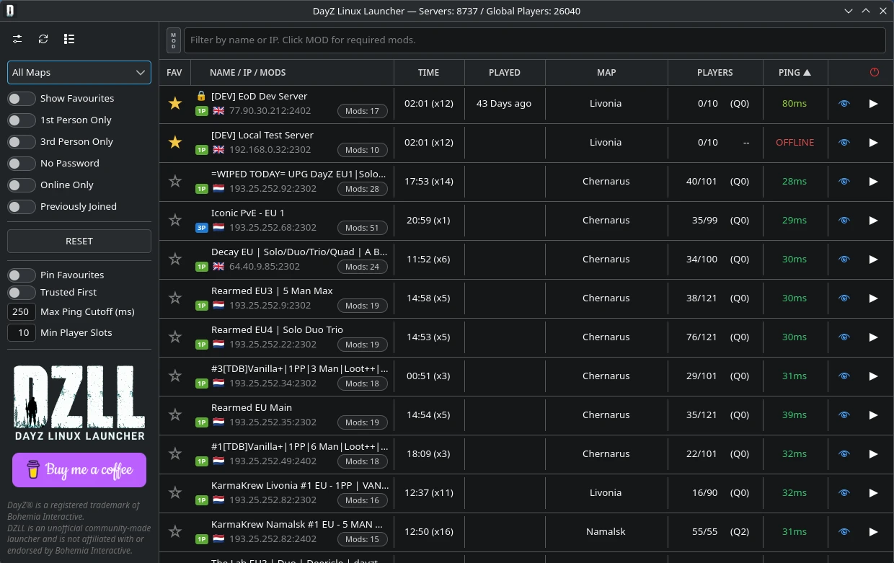
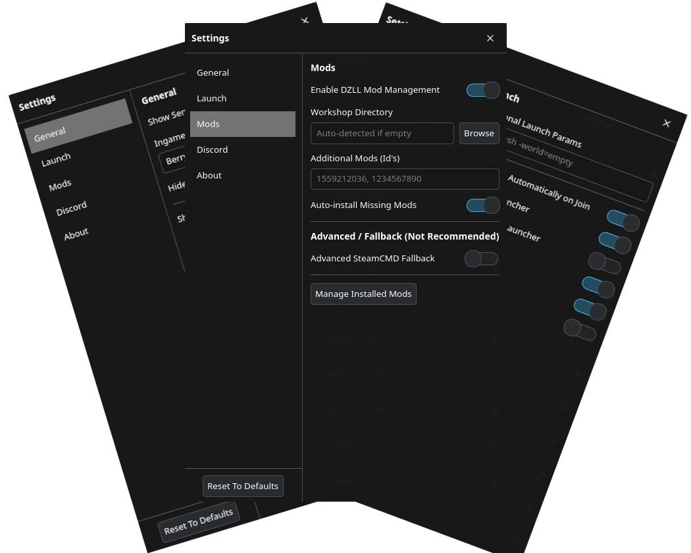

Fast Server Browsing
Find populated servers quickly with a cleaner browser, useful filters, and favourites that actually feel nice to use.
Browse servers, handle mods, and launch DayZ on Linux with a cleaner, faster workflow.
Built for Proton and native Steam, with the Steam Client Workshop backend as the recommended mod path.

DZLL is designed to remove friction from the Linux DayZ experience without turning the launcher into a bloated mess.
Find populated servers quickly with a cleaner browser, useful filters, and favourites that actually feel nice to use.
The Steam Client Workshop backend is the default and recommended way to prepare required mods.
Streamline the messy parts of joining modded servers so getting in-game takes less effort.
Browse server information from DZLL's curated database with useful search, filter, and sorting tools.
Built specifically for Linux players instead of feeling like a Windows launcher awkwardly dragged over.
Free to use, community-focused, and hosted on GitHub under the DZLL Community Source Licence v1.0.
DZLL focuses on the parts that matter: browsing servers, handling mods, and getting you in-game with less hassle.
Search, filter, favourite, and sort without the usual friction.
A cleaner path for preparing required content before launch.
See the available server information before you join.

Browse, search, filter, and favourite servers in a Linux-friendly interface.
DZLL uses native Steam Client Workshop handling by default. SteamCMD is an optional advanced troubleshooting fallback.
Start DayZ with the correct setup and get into the server faster.
Get DZLL v0.3.0 Beta from GitHub Releases. Fedora RPM and Ubuntu DEB packages are available, with SHA256 checksums provided. Native Steam is required; SteamCMD is optional and intended only for advanced troubleshooting. Flatpak Steam is unsupported.
DZLL is free, source-available community software licensed under the DZLL Community Source Licence v1.0. It may not be sold, paywalled, monetised, bundled into paid services, or used for paid server promotion, paid placement, advertising, affiliate schemes, or referral schemes. Modified versions must remain free, include the licence, keep attribution, and clearly state that they are unofficial.